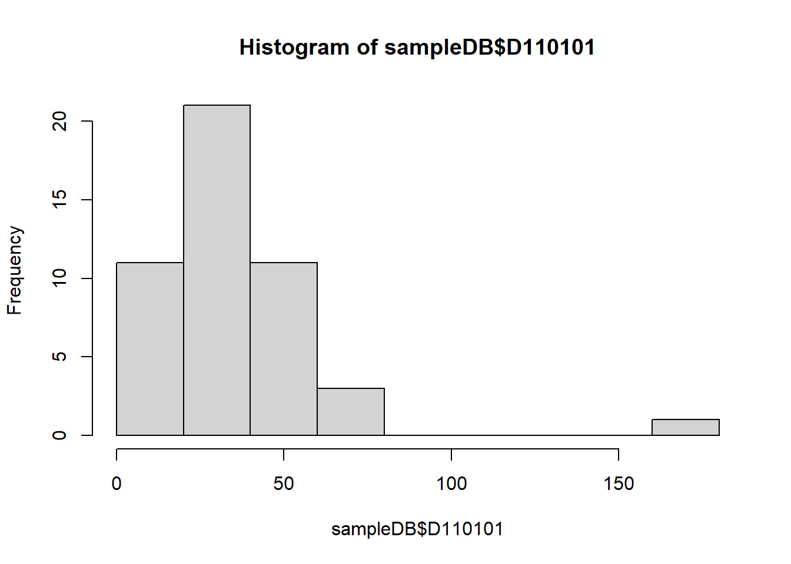
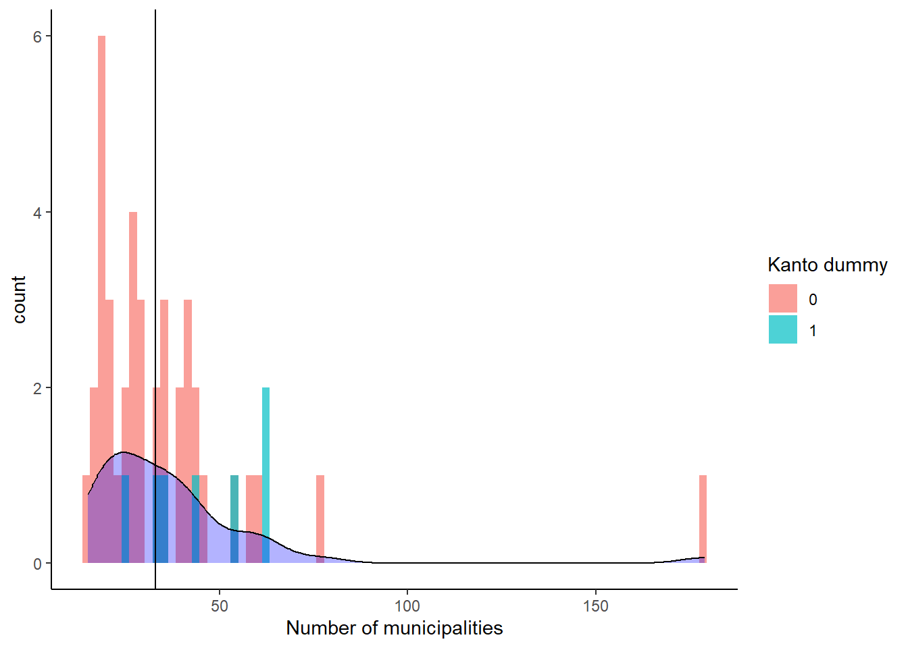
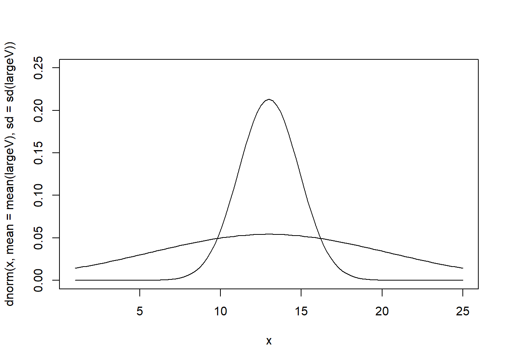
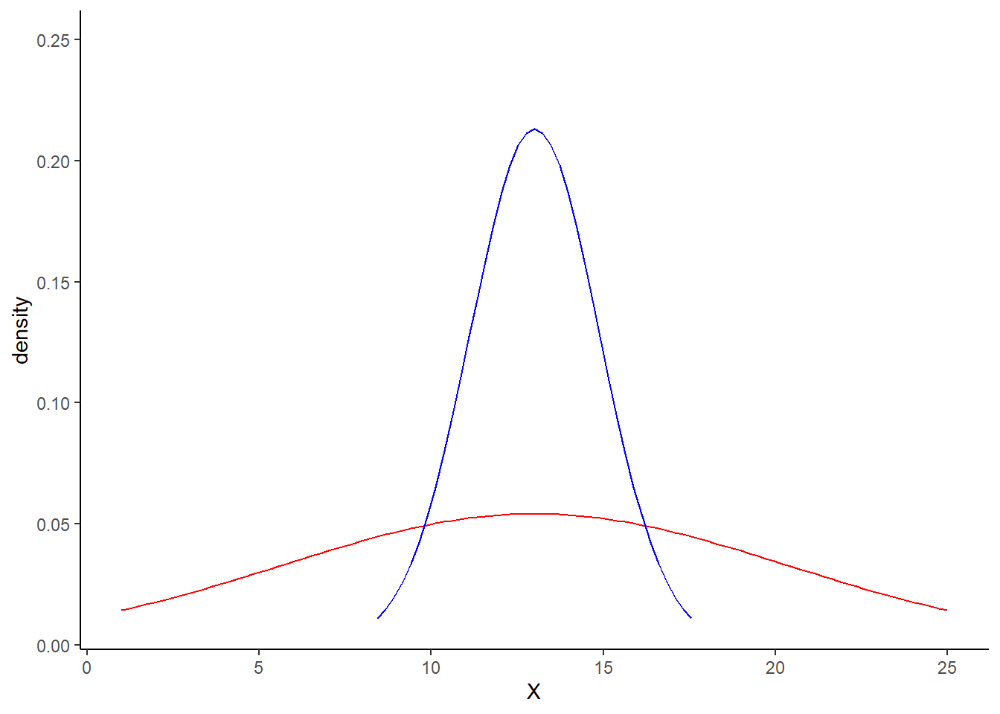
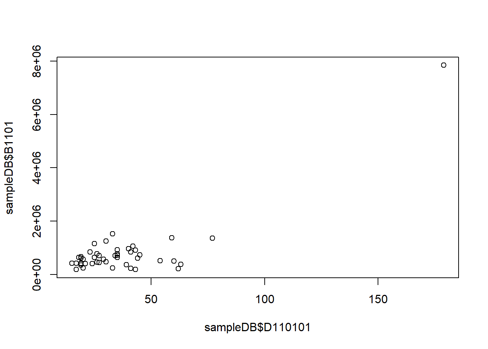
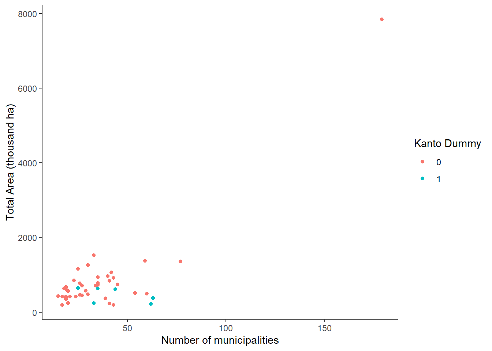
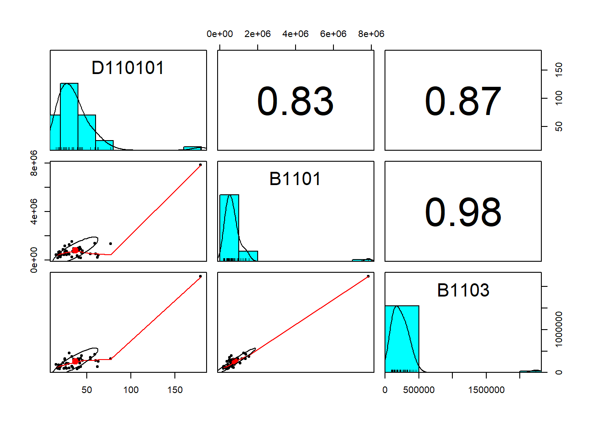
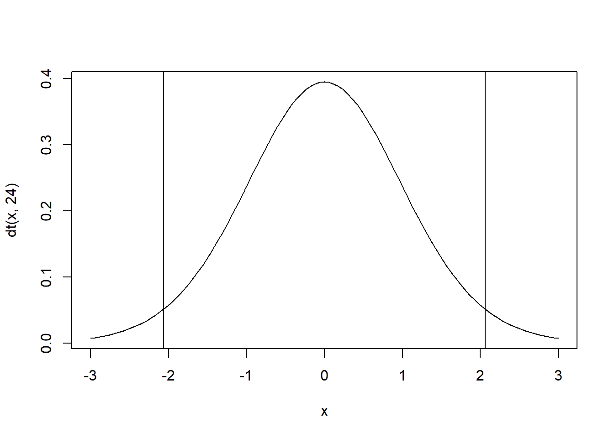

chapter: 6 Rによる統計的仮説検定
統計学の講義で学んだ検定をRで実行する方法を学びます。
# ライブラリコマンドでの読み込みは毎回必要
library(readxl)
library(ggplot2)
library(dplyr)
library(tidyverse)
#library(foreign)
# Macユーザ向けの日本語フォント
#theme_set(theme_gray(base_size = 10, base_family = "HiraginoSans-W3"))
#ウィンドウズユーザー向けの日本語フォント
#windowsFonts(YuGothic = windowsFont("Yu Gothic"))
#theme_set(theme_gray(base_size = 10, base_family = "YuGothic"))6.1 データの読み込み
# 変数の対応関係
# A1101_総人口【人】
# A1301_15歳未満人口【人】
# A1303_65歳以上人口【人】
# B1101_ 総面積（北方地域及び竹島を除く）【ｈａ】
# B1103_ 可住地面積【ｈａ】
# B4107_ 雪日数（年間）【日】
# B4108_ 日照時間（年間）【時間】
# D110101_市町村数【‐】
# E6102_大学数【校】
# E6302_大学学生数【人】
# F610201_超過実労働時間数（男）【時間】
# F610202_超過実労働時間数（女）【時間】
# H110202_空き家数【戸】
#ウェブサイトから直接ダウンロードする場合
url1<-"https://yamamoto-masashi.github.io/DSlec/20201028sample.xls"
#download.file(url1,destfile="20201028sample.xls")
download.file(url1,destfile="20201028sample.xls",mode="wb")
# エクセルファイルの読み込み
# ヘッダ部分を読み飛ばしている
# sheet=1を変更することで別のシートも読める
sampleDB<-read_excel("20201028sample.xls",skip=5,sheet=1)
# 列１と列２の名前を変更している。
names(sampleDB)[1:2]<-c("prefcode","prefnameJ")6.2 平均・分散・標準偏差
都道府県別の市町村数を例に基本統計量の計算方法を示す。
#average
mean(sampleDB$D110101)## [1] 37#sum
sum(sampleDB$D110101)## [1] 1741#count
length(sampleDB$D110101)## [1] 47#median
median(sampleDB$D110101)## [1] 33#maximum value
max(sampleDB$D110101)## [1] 179#minimum value
min(sampleDB$D110101)## [1] 15# frequency distribution
table(sampleDB$D110101)##
## 15 17 18 19 20 21 23 24 25 26 27 29 30 33 34 35 39 40 41 42
## 1 2 1 5 2 1 1 1 2 2 2 1 2 2 1 4 1 1 2 1
## 43 44 45 54 59 60 62 63 77 179
## 2 1 1 2 1 1 1 1 1 1#histgram using base
hist(sampleDB$D110101)
#histgram using ggplot2
sampleDB %>%
ggplot()+
geom_histogram(aes(x=D110101,fill=factor(Kanto)),
bins=80,position="nudge",alpha=0.7)+
geom_density(aes(x=D110101,y=..count..),fill="blue", alpha=0.3) +
labs(fill="Kanto dummy")+xlab("Number of municipalities")+
geom_vline(xintercept = 33)
#square root
sqrt(sampleDB$D110101)## [1] 13.4 6.3 5.7 5.9 5.0 5.9 7.7 6.6 5.0 5.9 7.9 7.3 7.9 5.7 5.5
## [16] 3.9 4.4 4.1 5.2 8.8 6.5 5.9 7.3 5.4 4.4 5.1 6.6 6.4 6.2 5.5
## [31] 4.4 4.4 5.2 4.8 4.4 4.9 4.1 4.5 5.8 7.7 4.5 4.6 6.7 4.2 5.1
## [46] 6.6 6.4以下の定義は覚えておこう。
母集団 (population)：調査対象となる要素の全体
標本 (sample)：母集団から抽出された個体の集まり
一致性 (consistency)：標本の数が多くなったら、サンプルの推定量が母数に一致すること
不偏性 (unbiasedness)：標本の推定量が母数に等しくなること
標本分散: \(s_{xx}=\frac{1}{n}\sum_{i=1}^{n}(x_i-\overline{x})^2\)
不偏分散: \(\sigma_xx =\frac{1}{n-1}\sum_{i=1}^{n}(x_i-\overline{x})^2=\frac{n}{n-1}\frac{1}{n}\sum_{i=1}^{n}(x_i-\overline{x})^2=\frac{n}{n-1}s_{xx}\)
推定量としては、不偏分散が望ましい。なお、分散の平方根を標準偏差(standard deviation)と呼ぶ。
#不偏分散を求める
var(sampleDB$D110101)## [1] 659#標準偏差を求める
sd(sampleDB$D110101)## [1] 266.3 分散・標準偏差が大きいことのイメージ
largeV<-1:25
mean(largeV)## [1] 13sd(largeV)## [1] 7.4smallV<-c(10,11,12,13,14,15,16,
10,11,12,13,14,15,16,
10,11,12,13,14,15,16,
13,13,13,13)
mean(smallV)## [1] 13sd(smallV)## [1] 1.9curve(dnorm(x,mean=mean(largeV),sd=sd(largeV)),ylim=c(0,0.25),from=1,to=25)
curve(dnorm(x,mean=mean(smallV),sd=sd(smallV)),ylim=c(0,0.25),from=1,to=25,add=TRUE)
ggplot(data=data_frame(X=c(1,25)),aes(x=X))+
stat_function(fun=dnorm,args=list(mean=mean(largeV),
sd=sd(largeV)),color="red")+
stat_function(fun=dnorm,args=list(mean=mean(smallV),
sd=sd(smallV)),color="blue",na.rm=TRUE)+
ylab("density")+ylim(0.01,0.25)## Warning: `data_frame()` was deprecated in tibble 1.1.0.
## ℹ Please use `tibble()` instead.
## This warning is displayed once every 8 hours.
## Call `lifecycle::last_lifecycle_warnings()` to see where this warning was
## generated.
6.4 データフレームの要約
summary(sampleDB)## prefcode prefnameJ A1101 A1301
## Min. : 1 Length:47 Min. : 560000 Min. : 71000
## 1st Qu.:12 Class :character 1st Qu.: 1085500 1st Qu.: 132000
## Median :24 Mode :character Median : 1614000 Median : 216000
## Mean :24 Mean : 2690277 Mean : 328043
## 3rd Qu.:36 3rd Qu.: 2704000 3rd Qu.: 326500
## Max. :47 Max. :13822000 Max. :1550000
## A1303 B1101 B1103 B4107
## Min. : 177000 Min. : 187678 Min. : 85553 Min. : 0
## 1st Qu.: 339000 1st Qu.: 416640 1st Qu.: 131898 1st Qu.: 13
## Median : 506000 Median : 609733 Median : 205919 Median : 20
## Mean : 756915 Mean : 793555 Mean : 260924 Mean : 35
## 3rd Qu.: 783000 3rd Qu.: 808915 3rd Qu.: 298550 3rd Qu.: 54
## Max. :3189000 Max. :7842077 Max. :2237238 Max. :131
## B4108 D110101 E6102 E6302 F610201
## Min. :1526 Min. : 15 Min. : 2 Min. : 6710 Min. :11.0
## 1st Qu.:1898 1st Qu.: 22 1st Qu.: 6 1st Qu.: 11696 1st Qu.:15.0
## Median :2120 Median : 33 Median : 9 Median : 18376 Median :16.0
## Mean :2070 Mean : 37 Mean : 17 Mean : 55312 Mean :15.9
## 3rd Qu.:2238 3rd Qu.: 42 3rd Qu.: 18 3rd Qu.: 43465 3rd Qu.:17.0
## Max. :2391 Max. :179 Max. :138 Max. :669191 Max. :20.0
## F610202 H110202 Kanto
## Min. : 5.0 Min. : 39900 Min. :0.00
## 1st Qu.: 7.0 1st Qu.: 82700 1st Qu.:0.00
## Median : 8.0 Median :126800 Median :0.00
## Mean : 7.7 Mean :180615 Mean :0.15
## 3rd Qu.: 9.0 3rd Qu.:197250 3rd Qu.:0.00
## Max. :10.0 Max. :809900 Max. :1.006.5 相関係数
二つの変数の直線的な関係を数値的に表す方法として相関係数 (correlation)がある。
相関係数の定義は以下の通り
\[r_{xy}=\frac{s_{xy}}{\sqrt{s_{xx}}\sqrt{s_{yy}}}\]
ただし、
\[s_{xy}=\frac{1}{n}\sum_{i=1}^{n}\left(x_i-\overline{x}\right)\left(y_i-\overline{y}\right)\]
は共分散である。
# 二つのデータは無相関であるという帰無仮説を検定
# 市町村数と都道府県の総面接
cor.test(sampleDB$D110101,sampleDB$B1101)##
## Pearson's product-moment correlation
##
## data: sampleDB$D110101 and sampleDB$B1101
## t = 10, df = 45, p-value = 6e-13
## alternative hypothesis: true correlation is not equal to 0
## 95 percent confidence interval:
## 0.71 0.90
## sample estimates:
## cor
## 0.83# 市町村数と都道府県の可住地面接
cor.test(sampleDB$D110101,sampleDB$B1103)##
## Pearson's product-moment correlation
##
## data: sampleDB$D110101 and sampleDB$B1103
## t = 12, df = 45, p-value = 3e-15
## alternative hypothesis: true correlation is not equal to 0
## 95 percent confidence interval:
## 0.77 0.93
## sample estimates:
## cor
## 0.87# 相関関係の可視化
plot(sampleDB$D110101,sampleDB$B1101)
# ggplotによる可視化
sampleDB %>%
ggplot()+
geom_point(aes(x=D110101,y=B1101/1000,color=factor(Kanto)))+
xlab("Number of municipalities")+ylab("Total Area (thousand ha)")+
labs(color="Kanto Dummy")
# 相関係数を３つ表示
sampleDB %>%
select(D110101,B1101,B1103)->sampleDBsmall
library(psych)
pairs.panels(sampleDBsmall)
6.6 仮説検定
ミクロ経済学は一定の仮定をもうけることで「必ず○○となる」と言った確定的な結論を提供する。しかし場合によってはその仮定が非現実的であることもある。実証分析は実際のデータに基づいているので、その方が優れているかというと必ずしもそうではない。例えば、教室にいる女性に「一番好きな食べ物は何か？」と聞いて、仮に全員が「焼き芋」と答えたとしても「世界中の女性が最も好きな食べ物は焼き芋である」ということにはならない。
母集団全体からデータを集めることは通常不可能である。そこで、どの程度の確率で自分の仮説が確からしいかを数量的に評価する方法が求められる。これが推測統計学を基礎とした計量経済学の基本的な考え方である。
そのための重要な考え方が、統計的仮説検定と呼ばれるものである。これは自身が主張したい仮説と逆の命題を「帰無仮説」として設定し、この「帰無仮説」がめったに起らないかどうかを確認する。このめったに起らないの「めったに」を有意水準といい、経済学では通常100回やったら5回以下しか起こらないような事象を指す。これを有意水準5%での仮説検定と呼ぶ。もし、有意水準5%で帰無仮説が棄却されたら、帰無仮説の逆の命題（対立仮説と呼ばれる）が消極的に指示されるのである。
6.7 t検定
母分散が未知である場合の一つの平均値の検定
標準正規分布の標本分散を不偏分散で置き換えた以下の推定量
\[t=\frac{\overline{x}-\mu}{\hat{\sigma}/\sqrt{n}}\] は自由度\(n-1\)の\(t\)分布に従うことが知られている。
分散・標準偏差の大きさのイメージで使用したデータが、正規分布しているA大学及びB大学の成績分布の中から抽出されたものだとしよう。例として、
帰無仮説：\(\mu=15\)
対立仮説：\(\mu \neq 15\)
を検定しよう。
#自由度=24のt分布
curve(dt(x,24),-3,3)
abline(v=qt(0.025,24)) # 2.5%のライン
abline(v=qt(0.975,24)) # 97.5%のライン
# t検定を実施するコマンド
t.test(smallV,mu=15)##
## One Sample t-test
##
## data: smallV
## t = -5, df = 24, p-value = 2e-05
## alternative hypothesis: true mean is not equal to 15
## 95 percent confidence interval:
## 12 14
## sample estimates:
## mean of x
## 13t値が-5.3452であり、2.5%ラインを大きく下回っている。つまり、\(\mu=15\)という帰無仮説が誤っていたと結論づけられる。母平均は15とは言えないという結論が有意水準5%で得られた。
来週以降に行う回帰分析においては、\(\mu=0\)という帰無仮説を検定する。